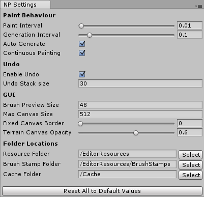

Documentation
Version:
Newest VersionCurrent Version: 1.1.4
Older Versions: 1.1 1.0
Last Updated: 10.07.17
Getting Started
- Get TerrainComposer 2 from the Asset Store, download and import it.
- Get TC2 Node Painter from the Asset Store, download and import it.
- Create a new TC2 project through the TC2 window ('Window/Power of Nature Software/Terrain Composer 2')
- Add a node to the graph for painting, e.g. in the height output - it will automatically be turned to an appropriate Image node in the next step.
- Add the NodePainter script to that Node. You will be presented with the TC2 Node Painter UI
- Create a new canvas by specifying a desired resolution and start painting!
Examples
The examples are located in the 'Node Painter/Examples' folder. It can safely be deleted if you don't need the examples anymore. You can check out one of the two example scenes from 'Node Painter/Examples/Scenes/':
- HeightPaintDemo:
This shows a simple height painting setup with auto-splatmapping. The Node Painter component can be found in the left-most height node. - BiomePaintDemo:
This shows the usage of the Multi-Mask-format - working similarily to splat maps - to mask three biomes (Mountains, Desert, Grassland) together. The Node Painter component to paint on can be found on the BiomePainting object in the hierarchy. Notice the use of multiple Node Targets (bottom) for each channel to assign the canvas to both the height and splat nodes.
Interface Explanation
Canvas IO
This section is for creating, loading and saving the canvas. When there is no canvas loaded, you can create a new canvas using the designated area, specifying size and canvas format.
Canvas Input/Output formats include lossy PNG, lossless RAW and a custom native byte format - each with their own pros and cons, as outlined in the IO Format Section.
Finally, you can save/load the cache file here, providing quick and safe backup points.
Canvas Preview
In the preview area you get a visualization of the canvas where you can also directly paint on. You can set Canvas Borders around the preview in the Settings to aid in edge painting.
Clicking on the 'E' button located at the right of the header allows you to edit the canvas name and set a custom cache file to synchronize painters between scenes.
The eye-icon next to it toggles the canvas projection onto the canvas, which can give you a better understanding on how the canvas affects the terrain.
When the canvas is set to Color or Multi-Mask format additional visualization options appear below the preview.
Below are the undo/redo buttons aswell as the Stop/Start Painting button used to toggle painting on and off, allowing you to use tools such as the move handle.
Color
Only shown in the color format, this region allows you to edit the color and its intensity. Using the bar next to the header you can create and load color presets.
Multi Channels
Only shown in the Multi-Mask format, you can select and modify the individual channels here. Using the context here allows you to specify a custom texture to display instead of the default channel color.
Brush
In this region you can edit the current brush and save/load presets using the numbered brush preset bar next to the header.
The first bar displays the available brush shape, the first of which is an adjustable function.
Below the brush bar are the settings for the current brush.
The Mode dropdown menu selects the Blending Mode.
Furthermore you can adjust rotation, size, intensity, and, for the function brush, falloff and hardness parameters.
Depending on the mode you also have additional options like target and bias here.
Most of these parameters can also be adjusted by a shortcut.
Finally, checking the clamp toggle clamps your canvas to 0-1 and in the Multi-Mask format, you can toggle canvas normalization on and off.
Modifications
This regions applies post-effects onto the canvas (currently only in Color and Value formats).
You can adjust the overall contrast and brightness, as well as those of individual channels when in color format.
As it is a post-effect until explicitly applied to the canvas, you can reset and apply these modifications using the appropriate buttons.
Additionally, you can set the canvas to an uniform value/color in this region.
Bottom
The 'Resize' region allows you to resize or expand your canvas to a specified resolution.
The 'Node Targets' list below should contain all Nodes the canvas is applied to - especially important in the Multi-Mask format!
Finally, pressing the 'Show Settings' button opens up the settings window.
Settings Window
You can access the settings window by clicking on the 'Show Settings' button at the bottom of any NodePainter inspector or through the menu 'Window/TC2 Node Painter Settings'.

Paint Behaviour
Here you can change the interval at which the painter paints and TC2 generates - usually, you want a longer interval on generation to allow several paint passes between each generation.
If you get stuttering while painting terrains and you cannot lower terrain resolution temporarily, consider increasing the generation interval or even disabling Auto Generate.
Enabling Continuous Painting makes the painter paint continuously even if you hold your mouse still.
Undo
You can disable undo completely here (not recommended) or lower the undo stack size which is especially useful when you're getting memory problems. All undo entries past this number will automatically be deleted and cannot be recovered.
GUI
This section allows you to do some simple GUI adjustments like adjusting display sizes in case you are on a smaller or bigger monitor than Full HD.
You can also add a border around your canvas preview which helps you paint the borders in the GUI preview, aswell as change the opacity of the canvas visualization projected on the terrain.
Folder Locations
You can move individual folder locations here in case you want to completely move the Node Painter folder or outsource specific parts.
They are saved per project in a text-file in the ProjectSettings directory so you can choose paths on a per-project basis.
Resource folder might be changed when you want to use the painter at runtime, then you can simply move it to a folder called 'Resources' and it works.
The BrushStamps and Cache folders can either be moved to a different path inside the project or even an absolute, external path.
The BrushStamps folder might point to a shared brush directory - all images within this folder will be regarded as brushes.
The Cache folder stores all your current working canvases - these are NOT stored in the scene! You might want to move this to a external folder if you are using source control.
Canvas Formats
The canvas format defines its purpose for painting. However, it's internal representation is always RGBA.
These are the three formats you have to choose from when creating a canvas:
Value
A grayscale canvas that is useful for height painting and simple masks in any output.
Color
A color canvas is not directly used in any output but is there for various reasons. It can be used for applications outside of TC2 or to get interesting results when mixing and blending the individual channels together (TC2 interprets them as max(r,g,b,a)). The color region is only shown here and you also get per-channel modifications.
Multi-Mask
This complex format allows you to paint in up to 24 channels, similar to splat painting. An ideal use case would be for painting biomes or forests.
Using this format shows the Multi Channel region in the inspector, where you can select, edit and add/remove channels.
It is important that you assign different node targets for each channel in the Node Targets region below.
For example, you could add the Height, Splat and Tree nodes here that correspond to the biome you are painting.
You can also choose to normalize the channel values in the brush region, which is strongly recommended because overlapping channels will fight,
and the channel which is the highest in TC2 wins, which usually gives unwanted results.
Basically this will replace the color of all other channels while painting, eliminating the overlapping regions.
Internally, canvases of this format potentially consist of multiple textures: Every 4 channels is represented internally by one texture, just like splat maps.
This might cause technical problems when using many channels, like memory shortage. Read the notes on memory below for more information.
IO Formats
There are several different Input/Output formats available to save the canvas, each for their own specific use case. Basically, it's best to use the native format most of the time. If you need to open the canvas in external programs, try to use RAW if they do support RAW import and only if there's no other way you should resort to the 8-Bit PNG format.
Custom Native Byte Format
A lossless 16-Bit combined BYTE format that perfectly stores the canvas in one file with extension .bytes. Internally it stores all canvas meta information and embeds all canvas textures as uncompressed, lossless 16-Bit RAW data. It is used by the cache system because due to the .bytes extension it is regarded as a TextAsset and thus can be referenced.
Texture/Image
A lossy 8-Bit PNG Texture format for exporting to various image editors that do not support the RAW format. It stores most canvas meta information except the multi-format canvas channel count (which is rounded up to the next multiple of four after loading). For canvases of the multi-format, save files are split in multiple files named 'name(n)' for each 4 channels for the lack of embedding multiple textures into one save file.
Raw File
A lossless 16-Bit RAW File export format for directly exporting to terrains and the few image editors that do support the RAW format (like Photoshop). It does not store ANY canvas meta information, it is approximated from file size upon import and might need user correction. For canvases of the multi-format, save files are split in multiple files named 'name(n)' for each 4 channels for the lack of embedding multiple textures into one save file.
Blend Modes Explanation
There are 4 major blend modes available:
- Add / Substract:
This is a basic addition (or substraction when holding shift) of the intensity onto the canvas. - Lerp:
This mode lerps the canvas to the specified target, getting slower the closer it is to the target (in contrast to Replace). Intensity sets the speed of the lerp. This can also be used as a smoother add brush and can be inverted by holding shift (sets 1-target). - Replace:
Linearly replaces the canvas value with the target value at the speed specified by the intensity. This mode can also be inverted by holding shift (sets 1-target). - Smoothen / Contrast:
Decrease or increase details on the canvas texture with detail level specified through the bias property (shift to switch in between).
Color/Brush Presets
The preset system is available to both color and brush regions. You can load a preset by clicking on its button, even when the region is collapsed, and create one by clicking the plus button. You delete them by right-clicking and selecting 'Delete' from the shown context menu.
These presets are saved to your EditorPrefs so they will persist between sessions and painters.
Shortcuts
Shortcuts are used for adjusting brush parameters while painting. They work both in the GUI and in the scene view.
Notes on Performance
Performance
The performance of the painter is obviously a lot slower than the default terrain brush due to the fact it has to go through several steps to finally reach the terrain. Node Painter is fully GPU-powered, just as TC2 is, but even the simplest setup requires several passes on the GPU which adds up quite fast.
Then comes the most performance-hungry operation: Assigning the result on the terrain. This step has been optimised to only assign the region under the brush but still takes alot of time.
Compared to the default terrain brush it appears to take longer because Node Painter allows for much higher brush sizes - resulting in bigger areas to cover - which may not be so apparent.
Memory
If you use a high resolution or many canvas channels (in Multi-Mask format) memory consumption can quickly become a problem if you're not careful. For each action performed on the canvas, an undo record is created, copying all involved textures. These live in the memory until the maximum undo stack size is reached (30).
It is recommended to lower this value if you're on a rig with under 8GB of RAM.
Glossary
- NodePainter (script)
The script used to manage, paint and assign the canvas to the nodes. It is possible to assign the canvas to multiple nodes by specifying additional node targets. - Node Targets:
Nodes the canvas are assigned to. All node target transformations of a NodePainter script are kept in sync to prevent misalignment. Either transform the NodePainter object itself or, in order to scale the node targets individually, use their height/opacity. - Canvas:
The buffer of textures used for the painting data that is assigned to all node targets. - Biome:
A grouping of several outputs, like height, splat, trees, etc. to represent different flora and fauna on the terrain, defined through multiple node targets per channel in a Multi-Mask canvas, each representing one respective output.